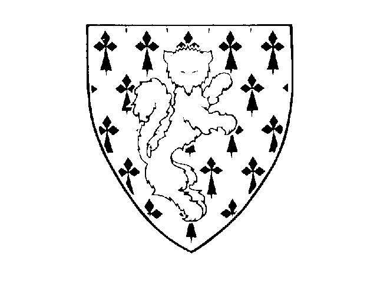

| In Belgien hat ZANNEKIN den Status einer Vereinigung, in den Niederlanden den einer Stiftung. Der Name ZANNEKIN lehnt sich an den südflämischen Freiheitskämpfer Niklaas Zannekin an. Dieser 'Hauptmann' der Aufständischen in der flämischen Küstenregion fiel 1328 auf dem Kasselberg im Kampf gegen die Franzosen. Niklaas Zannekin ist durch seinen Mut im Kampf gegen die Fremdherrschaft und das soziale Unrecht zum Symbol für den Einsatz und den Kampf um das geistige und kulturelle Erbe der Niederlande geworden. Das Wappen von Zannekin, ein roter Fuchs auf hermelinenem Feld, hat die Vereinigung zu ihrem Emblem gewählt. |  |